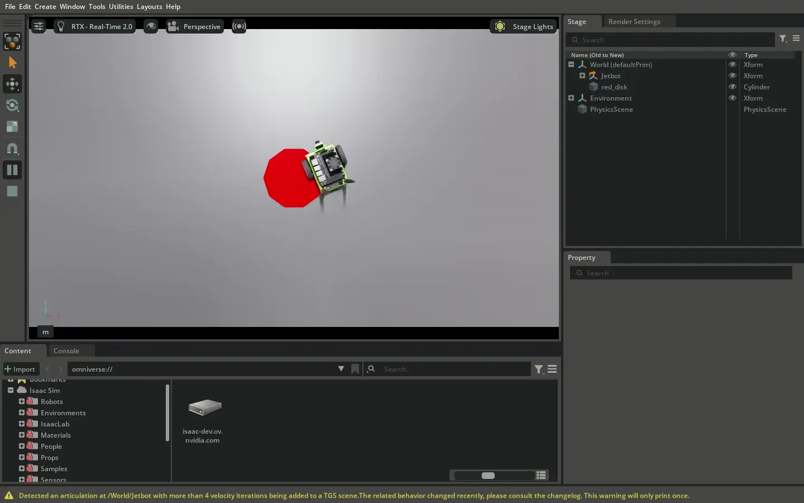
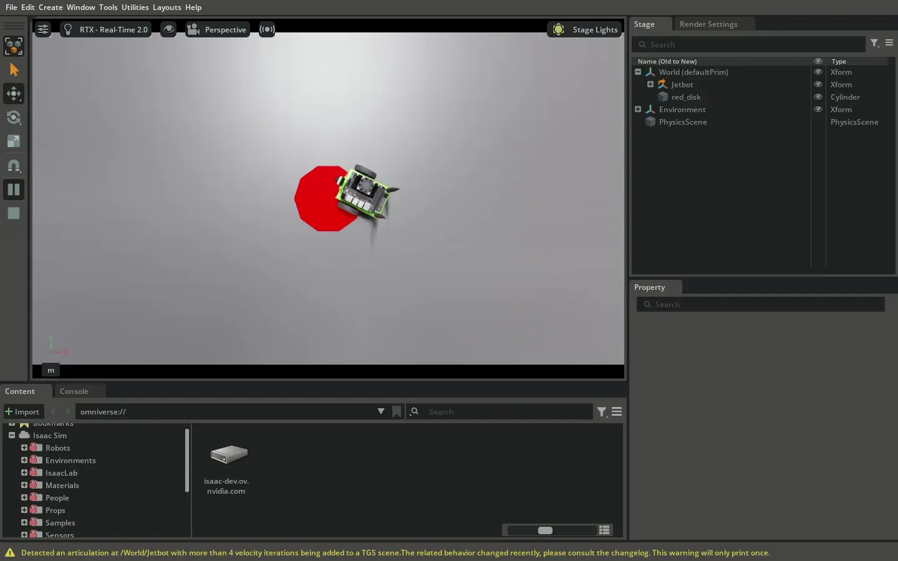
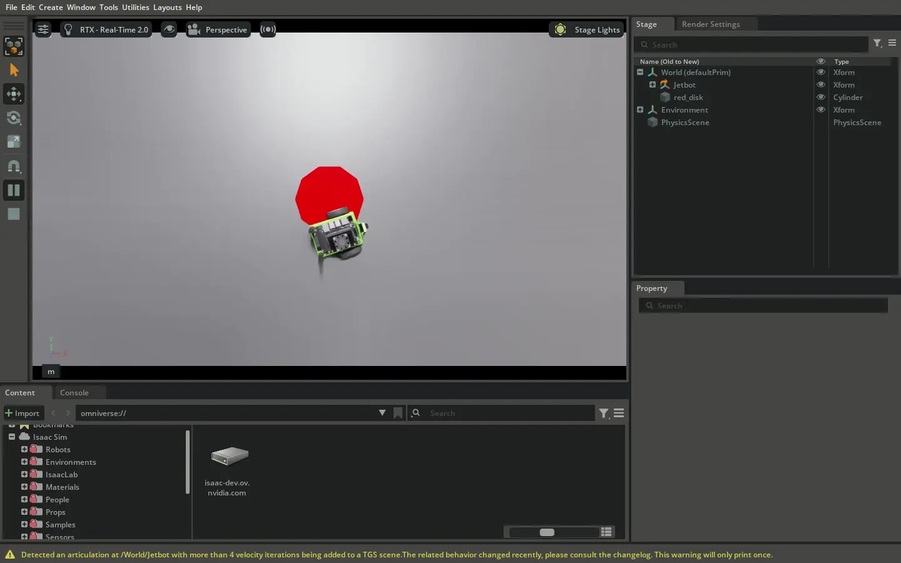

Controllers and the RobotState#
이 튜토리얼은 Motion Generation API의 기본 구성 요소를 사용하여 완전한 로봇 컨트롤러를 구축하는 방법을 보여줍니다:
RobotState클래스BaseController인터페이스
BaseController 인터페이스는 모바일 로봇, 관절형 로봇, 휴머노이드와 같은 복합 시스템에서 모두 동작합니다. 이 튜토리얼에서는 Jetbot을 위한 차동 구동(differential drive) 컨트롤러를 만들고, 노이즈 환경에서의 강건성을 위한 저역통과(low-pass) 필터 컨트롤러를 선택적으로 조합합니다.
만들 컨트롤러의 기능:
원하는 로봇 속도를 바퀴 명령으로 변환
부드러운 동작을 위한 필터링 적용
실시간 시뮬레이션 루프에서 실행
모든 코드 예제는 실행 가능한 완전한 파일 mobile_robot_control_example.py에서 가져온 것입니다:
# Mobile robot controller with differential drive and optional filtering
./python.sh standalone_examples/api/isaacsim.robot_motion.experimental.motion_generation/mobile_robot_control_example.py
--noise와 --filter 인수를 사용하여 다양한 노이즈 및 필터링 조합에서 Jetbot의 성능을 확인할 수 있습니다.
예를 들어, 인수 없이 실행하면 이상적인 조건에서의 성능을 볼 수 있습니다. --noise를 추가하면 노이즈 입력 조건에서 컨트롤러 성능에 미치는 악영향을 확인할 수 있습니다. 마지막으로 --filter --noise를 함께 사용하면 필터링이 활성화된 노이즈 조건에서 컨트롤러의 강건성을 확인할 수 있습니다:
BaseController 인터페이스로 컨트롤러를 구축하기 전에, RobotState와 제어 공간(control spaces)을 이해해야 합니다.
제어 공간은 Motion Generation API의 핵심 개념이며, 처음부터 올바르게 이해하면 많은 일반적인 문제를 예방할 수 있습니다.
# Run with noise and filtering enabled
./python.sh standalone_examples/api/isaacsim.robot_motion.experimental.motion_generation/mobile_robot_control_example.py --noise --filter
Understanding Control Spaces#
제어 공간은 모든 컨트롤러가 공유할 전체 공유 공간을 나타냅니다. 함께 동작하는 모든 컨트롤러가 동의해야 하는 이름(관절, 링크, 또는 사이트)의 순서 있는 목록을 정의합니다.
What Are Control Spaces?#
예를 들어, 9개의 관절에 대한 제어를 공유하는 6개의 컨트롤러를 설계하는 경우, 모두 동일한 관절 순서를 알아야 합니다.
이 공유 순서가 조인트 공간(robot_joint_space)입니다. 마찬가지로 여러 컨트롤러가 링크나 사이트를 제어하는 경우, 동일한
링크 공간(robot_link_space) 또는 사이트 공간(robot_site_space)을 공유해야 합니다.
RobotState의 일부(관절, 링크, 또는 사이트)를 생성할 때는 해당 컴포넌트가 존재하는 공간을 선언해야 합니다.
제공하는 공간은 함께 동작하는 모든 컨트롤러에서 일치해야 합니다.
권장 워크플로우는 컨트롤러를 만들기 전에 공간을 먼저 정의하는 것입니다:
The Ideal Workflow#
조인트 공간 정의: 컨트롤러가 제어할 수 있는 모든 관절 이름의 순서 있는 목록 생성
링크 공간 정의: 포즈를 제어하고자 하는 모든 링크 이름의 순서 있는 목록 생성
사이트 공간 정의: 포즈를 제어하고자 하는 모든 사이트 이름(엔드 이펙터, 툴 프레임)의 순서 있는 목록 생성
이후 모든 컨트롤러를 생성할 때 동일한 공간 정의를 사용합니다. 이를 통해 모든 컨트롤러가 로봇 구조에 대해 동일한 이해를 공유하고, 서로 다른 컨트롤러의 상태를 결합할 때 오류를 방지합니다.
제어 공간은 주로 로봇 표현(예: 조인트 공간의 경우 Articulation.dof_names)에서 얻습니다. 그러나 컨트롤러는 이러한 소스에 의존하지 않으며, 이름의 순서 있는 목록이면 무엇이든 사용할 수 있어 유연하게 모든 로봇 정의와 함께 사용 가능합니다.
RobotState는 로봇의 여러 부분을 다양한 방식으로 제어할 수 있는 통합 표현입니다. RobotState는 다음을 포함할 수 있습니다:
RobotState Structure#
joints - 관절 위치, 속도, 힘(조인트 공간 제어)
sites- 로봇의 특정 지점의 포즈 및 트위스트(사이트 공간 제어)links- 로봇 링크의 포즈 및 트위스트(링크 공간 제어)root- 로봇 루트의 포즈 및 트위스트(루트 공간 제어)이 필드들은 모두 선택 사항이며, 컨트롤러는 제어하려는 상태의 일부만 지정할 수 있습니다.
일반적으로 컴포넌트 상태 클래스를 사용하여 RobotState 객체를 생성합니다:
Creating RobotStates with Control Spaces#
JointState.from_name() - 조인트 공간 제어용(robot_joint_space 필요)
SpatialState.from_name()- 링크 또는 사이트 공간 제어용(robot_link_space또는robot_site_space필요)RootState- 루트 공간 제어용(루트가 하나뿐이므로 제어 공간 불필요)상태 컴포넌트를 생성할 때는 전체 제어 공간(모든 이름의 순서 있는 목록)을 제공하고 제어할 부분을 지정합니다. 이를 통해 부분 상태를 생성할 수 있으며, 특정 관절, 링크, 사이트와 필요한 속성만 제어할 수 있습니다. 예를 들어 관절의 경우 일부는 위치로, 다른 것은 속도로 제어할 수 있습니다. 제어 모드를 완전히 건너뛰려면
None을 전달합니다.
combine_robot_states() 함수를 사용하면 두 RobotState 객체를 합칠 수 있습니다. 이를 통해 서로 다른 컨트롤러가 로봇의 각기 다른 부분을 동시에 제어할 수 있습니다.
Combining RobotStates#
예를 들어, 한 컨트롤러는 로봇의 팔 관절을 제어하고, 다른 컨트롤러는 그리퍼를, 세 번째 컨트롤러는 베이스 위치를 제어할 수 있습니다.
결합 함수는 상태를 결합할 수 없는 경우 None을 반환합니다. 이는 두 가지 경우에만 발생합니다:
두 RobotState 객체가 동일한 관절 또는 프레임의 동일한 속성을 정의하려는 경우(즉, 두 객체 모두 동일한 관절의 속도나 동일한 사이트의 방향을 정의하려는 경우).
정의된 제어 공간이 일치하지 않는 경우(예:
robot_joint_space,robot_link_space,robot_site_space정의가 일치하지 않는 경우).공간을 먼저 정의하는 것이 중요합니다. 컨트롤러가 서로 다른 공간 정의를 사용하면 상태를 결합할 수 없습니다.
다음으로 BaseController 인터페이스를 이해해야 합니다. 컨트롤러는 Motion Generation API의 핵심입니다.
현재 상태와 선택적 목표점(setpoint)을 기반으로 원하는 로봇 상태를 계산합니다.
The Controller Interface#
Motion Generation API의 모든 컨트롤러는 BaseController 인터페이스를 구현하며, 두 가지 필수 메서드를 정의합니다:
reset() - 컨트롤러를 안전한 초기 상태로 초기화합니다. 컨트롤러 실행 직전에 한 번 호출됩니다.
forward()- 다음 타임 스텝의 원하는 로봇 상태를 계산합니다. 매 타임 스텝마다 다음과 함께 호출됩니다:현재 클락 시간
현재 추정된
RobotState, 그리고선택적 목표점
RobotState(목표).forward()메서드는 다음 원하는 상태를 나타내는RobotState를 반환하거나, 유효한 출력을 생성할 수 없는 경우None을 반환합니다.
API는 일반적인 패턴으로 컨트롤러를 조합하기 위한 편리한 클래스를 제공합니다:
Controller Composition#
ParallelController는 여러 컨트롤러를 동시에 실행하고 출력을 결합합니다. 서로 다른 컨트롤러가 로봇의 다른 부분을 제어하도록 할 때 적합합니다. ParallelController는 출력을 자동으로 병합합니다. 컨트롤러들이 동일한 관절이나 프레임을 제어하지 않으면 상태가 원활하게 결합됩니다.
Parallel Controllers#
SequentialController는 여러 컨트롤러를 순서대로 실행합니다. 한 컨트롤러의 출력이 다음 컨트롤러의 목표점이 됩니다. 컨트롤러 출력을 필터링하거나 처리할 때 유용합니다. 예를 들어, 노이즈 있는 입력 데이터를 평활화하는 필터 다음에 필터링된 입력으로 로봇을 구동하는 PID 유사 컨트롤러를 배치할 수 있습니다.
Sequential Controllers#
ControllerContainer를 사용하면 런타임에 컨트롤러 간에 전환할 수 있습니다. 상태 머신이나 행동 트리와 같은 상위 수준 제어 시스템과의 통합에 유용합니다.
여러 컨트롤러를 단일 컨테이너에 패키징하여 조작 작업이나 여러 단계가 필요한 작업을 위한 복잡한 동작을 만들 수 있습니다.
컨테이너는 전환 시 새 컨트롤러에서 자동으로 reset()을 호출합니다.
Controller Containers#
모든 조합 클래스는 그 자체로 컨트롤러이므로 중첩하여 복잡한 제어 계층 구조를 구축할 수 있습니다. 예를 들어, SequentialController와 다른 컨트롤러를 포함하는 ParallelController를 ControllerContainer로 감싸 런타임 전환을 구현할 수 있습니다.
Nesting Controllers#
제어 공간, RobotState, BaseController 인터페이스의 핵심 개념을 이해했으니 모바일 로봇 컨트롤러를 구축할 수 있습니다.
핵심 차동 구동 컨트롤러로 시작하여, 필터링을 추가하고, 완전한 제어 루프로 합칩니다.
Building Our Mobile Robot Controller#
이상적인 워크플로우에 따라 제어 공간을 정의합니다. 이 모바일 로봇 컨트롤러의 경우 로봇의 관절(바퀴 관절)을 제어해야 합니다.
로봇 관절형 표현(예: robot.dof_names)에서 조인트 공간을 얻습니다. 이 robot_joint_space는 로봇의 모든 관절의 순서 있는 목록을 정의합니다.
생성하는 모든 컨트롤러는 이 동일한 공간 정의를 사용하므로, 함께 동작하고 상태를 결합할 수 있습니다.
Defining the Control Space#
이 공간을 RobotState 객체 생성에 사용하려면 두 가지 핵심 위치에서 RobotState 객체를 생성해야 합니다:
로봇에서 현재 상태를 읽을 때(조인트 공간)
로봇의 원하는 속도를 설정할 때(루트 공간)
현재 로봇 상태를 읽고
RobotState를 생성하려면:
전체 robot_joint_space와 위치, 속도, 힘을 포함한 모든 관절이 지정되어 있습니다. 이를 통해 로봇의 현재 구성과 일치하는 완전한 조인트 상태가 생성됩니다.
def get_estimated_state_from_robot(robot: Articulation, robot_joint_space: list[str]) -> mg.RobotState:
"""Get the current estimated state of the robot.
Args:
robot: The robot articulation
robot_joint_space: The full joint space of the robot
Returns:
RobotState representing the current robot state
"""
# Get current joint positions, velocities, and efforts
return mg.RobotState(
joints=mg.JointState.from_name(
robot_joint_space=robot_joint_space,
positions=(robot_joint_space, robot.get_dof_positions()),
velocities=(robot_joint_space, robot.get_dof_velocities()),
efforts=(robot_joint_space, robot.get_dof_efforts()),
)
)
모바일 로봇의 원하는 속도를 설정하는 데 사용되는 원하는 루트 상태를 가진 RobotState를 생성하려면:
이를 통해 원하는 루트 상태(선형 및 각속도)를 가진 RobotState가 생성되고 관절은 정의되지 않은 상태로 남습니다.
setpoint_state = mg.RobotState(
root=mg.RootState(
linear_velocity=wp.array([v_linear_command, 0.0, 0.0]), # Forward velocity
angular_velocity=wp.array([0.0, 0.0, v_angular_command]), # Yaw rate
)
)
모바일 로봇은 차동 구동 시스템을 사용하며, 독립적으로 제어할 수 있는 두 개의 바퀴가 있습니다. 첫 번째 컨트롤러는 원하는 로봇 속도(얼마나 빠르게 전진하고 회전할지)를 개별 바퀴 속도로 변환합니다. 이것이 모바일 로봇 컨트롤러의 핵심입니다.
Step 1: The Differential Drive Controller#
특정 로봇의 기하에 기반하여 컨트롤러를 매개변수화하려면, 차동 구동 컨트롤러가 바퀴 반지름, 바퀴 간 거리(휠베이스), 선택적으로 속도 제한을 알아야 합니다. 또한 왼쪽과 오른쪽 바퀴를 제어하는 관절을 지정해야 합니다:
Initialization: Parameterizing the Controller#
DifferentialDriveController는 상태를 저장하지 않으므로 실제로 여기서 할 일이 없습니다. reset() 메서드는 True를 반환합니다:
def __init__(
self,
robot_joint_space: list[str],
wheel_radius: float,
wheel_base: float,
):
"""Initialize the differential drive controller.
Args:
robot_joint_space: The full joint space of the robot
wheel_radius: Radius of left and right wheels in meters
wheel_base: Distance between left and right wheels in meters
"""
self.robot_joint_space = robot_joint_space
self.wheel_radius = wheel_radius
self.wheel_base = wheel_base
self.controlled_joints = ["left_wheel_joint", "right_wheel_joint"]
The reset() Method: Initializing the Controller#
forward() 메서드에서 컨트롤러가 작업을 수행합니다. 입력을 검증하기 위해:
def reset(
self, estimated_state: mg.RobotState, setpoint_state: Optional[mg.RobotState], t: float, **kwargs
) -> bool:
"""Initialize the controller.
The DifferentialDriveController is stateless, so we don't need to do anything here.
"""
return True
The forward() Method: Computing Wheel Velocities#
루트 상태가 없으면 None을 반환
입력 조인트 상태가 컨트롤러와 동일한
robot_joint_space를 사용하지 않으면None을 반환.그렇지 않으면, 차동 구동 기구학을 사용하여 바퀴 속도를 계산하고 원하는
RobotState를 반환합니다:컨트롤러는 차동 구동 기구학을 사용하여 루트 속도를 바퀴 속도로 변환합니다.
def forward(
self, estimated_state: mg.RobotState, setpoint_state: Optional[mg.RobotState], t: float, **kwargs
) -> Optional[mg.RobotState]:
"""Compute desired wheel angular velocities from root velocity setpoint.
Converts desired root linear and angular velocities to wheel angular velocities
using differential drive kinematics:
ω_R = (1/(2r)) * (2V + ωb)
ω_L = (1/(2r)) * (2V - ωb)
where ω is angular velocity (yaw rate), V is linear velocity, r is wheel radius,
and b is wheel base.
"""
# First, verify that the correct inputs are there
# We need a setpoint root state. If there is no root state, we return None.
if setpoint_state is None or setpoint_state.root is None:
return None
# If the input joint state doesn't use the same robot_joint_space, we return None.
if estimated_state.joints is None or estimated_state.joints.robot_joint_space != self.robot_joint_space:
return None
root_state = setpoint_state.root
# Get desired linear and angular velocities
# Default to zero if not provided
if root_state.linear_velocity is not None:
v_linear = root_state.linear_velocity.numpy()[0] # Forward velocity (x-axis)
else:
v_linear = 0.0
if root_state.angular_velocity is not None:
v_angular = root_state.angular_velocity.numpy()[2] # Yaw rate (z-axis)
else:
v_angular = 0.0
# Convert root velocities to wheel angular velocities using differential drive kinematics
# ω_R = (1/(2r)) * (2V + ωb)
# ω_L = (1/(2r)) * (2V - ωb)
inv_denominator = 1.0 / (2.0 * self.wheel_radius)
omega_left = ((2.0 * v_linear) - (v_angular * self.wheel_base)) * inv_denominator
omega_right = ((2.0 * v_linear) + (v_angular * self.wheel_base)) * inv_denominator
# Output velocity commands for both wheels
return mg.RobotState(
joints=mg.JointState.from_name(
robot_joint_space=self.robot_joint_space,
velocities=(
self.controlled_joints,
wp.array([omega_left, omega_right]),
),
)
)
차동 구동 컨트롤러는 동작하지만, 입력 속도가 갑자기 변하면 바퀴 명령이 불규칙해질 수 있습니다. 로봇이 더 부드럽게 움직이도록 바퀴 속도 명령을 평활화하는 저역통과 필터 컨트롤러를 추가합니다. 이 필터 컨트롤러는 범용적이며 조인트 필터링에 언제든지 재사용할 수 있습니다. 필터 컨트롤러는 차동 구동 컨트롤러에 특화된 것이 아닙니다.
Step 2: Adding Smoothing with a Low-Pass Filter#
저역통과 필터 컨트롤러는 로봇의 조인트 공간과 필터 계수(alpha)를 알아야 합니다. alpha 매개변수는 적용되는 필터링의 양을 제어합니다. 값이 작을수록 더 많은 필터링이 적용됩니다(더 부드럽지만 반응이 느림):
Initialization: Configuring the Filter#
초기 필터 상태를 추정된 상태의 정확한 기반 조인트 데이터 배열로 재설정할 수 있습니다. 이를 통해 로봇의 불규칙한 움직임을 방지합니다. 필터가 로봇의 정확한 상태와 일치하도록 초기화되면, 실행 시작 직후 로봇이 필터를 부드럽게 따라갑니다:
def __init__(self, robot_joint_space: list[str], alpha: float = 0.1):
"""Initialize the low-pass filter controller.
Args:
robot_joint_space: The full joint space of the robot
alpha: Low-pass filter coefficient (0 < alpha <= 1). Smaller values = more filtering.
"""
self.robot_joint_space = robot_joint_space
self.alpha = alpha
# Internal state: filtered data array (shape: (3, N))
self.filtered_data_array = None
The reset() Method: Initializing the Filter State#
forward() 메서드는 목표점 상태의 전체 기반 데이터 배열에 저역통과 필터를 적용하여 모든 조인트 출력(위치, 속도, 힘)을 동시에 필터링합니다. 목표점 상태가 없으면 None을 반환합니다:
def reset(
self, estimated_state: mg.RobotState, setpoint_state: Optional[mg.RobotState], t: float, **kwargs
) -> bool:
"""Initialize the controller.
Resets the initial filter state to be exactly the underlying joint-data array from the estimated state.
This prevents jerky motions - if the filter is initialized to match the exact state of the robot,
then the robot will smoothly transition into following the filter as soon as it starts running.
"""
# Validate joint spaces match
if not self._validate_joint_spaces(estimated_state, setpoint_state):
return False
if estimated_state.joints is None:
return False
# Initialize filtered data array to match the estimated state's joint data array
# This ensures smooth transition when the filter starts running
self.filtered_data_array = wp.clone(estimated_state.joints.data_array)
return True
The forward() Method: Applying the Filter#
필터 컨트롤러는 전체 기반 데이터 배열에 저역통과 필터를 적용하여 모든 조인트 출력을 동시에 평활화합니다.
def forward(
self, estimated_state: mg.RobotState, setpoint_state: Optional[mg.RobotState], t: float, **kwargs
) -> Optional[mg.RobotState]:
"""Compute filtered joint state.
Applies low-pass filter to the entire data array of the setpoint state.
Filters all joint outputs (position, velocity, effort) simultaneously.
"""
# Validate joint spaces match
if not self._validate_joint_spaces(estimated_state, setpoint_state):
return None
if self.filtered_data_array is None:
return None
# Get input data array from setpoint
if setpoint_state is None or setpoint_state.joints is None:
# No setpoint, return None
return None
input_joint_state = setpoint_state.joints
input_data_array = input_joint_state.data_array
input_valid_array = input_joint_state.valid_array
# Apply low-pass filter to entire data array: filtered = alpha * input + (1 - alpha) * filtered
input_data_np = input_data_array.numpy()
filtered_data_np = self.filtered_data_array.numpy()
filtered_data_np = self.alpha * input_data_np + (1 - self.alpha) * filtered_data_np
self.filtered_data_array = wp.from_numpy(filtered_data_np, dtype=wp.float32)
# Output filtered joint state with same valid array as input
return mg.RobotState(
joints=mg.JointState(
robot_joint_space=self.robot_joint_space,
data_array=self.filtered_data_array,
valid_array=input_valid_array,
)
)
이제 SequentialController를 사용하여 두 컨트롤러를 결합합니다. 차동 구동 컨트롤러가 바퀴 속도를 계산하고, 필터가 로봇으로 전송되기 전에 이를 평활화합니다:
Step 3: Composing the Controllers#
이제 모든 부분이 준비되었습니다: 차동 구동 컨트롤러, 필터, 그리고 이들이 함께 조합되었습니다. 마지막 단계는 실시간으로 실행되는 완전한 제어 루프에 모두 통합하는 것입니다.
def differential_drive_control(
robot: Articulation, robot_joint_space: list[str], add_noise: bool = False, use_filter: bool = False
):
"""Example: Differential drive controller tracking root velocity.
Args:
robot: The robot articulation
robot_joint_space: The full joint space of the robot
add_noise: If True, add noise to the root velocity setpoints
use_filter: If True, wrap the differential controller with a low-pass filter
"""
# Create differential drive controller
# For Jetbot, adjust these parameters as needed
differential_controller = DifferentialDriveController(
robot_joint_space=robot_joint_space,
wheel_radius=0.03, # 3 cm wheel radius
wheel_base=0.1125, # 11.25 cm wheel base
)
# Optionally wrap with low-pass filter using SequentialController
if use_filter:
filter_controller = LowPassFilterController(
robot_joint_space=robot_joint_space,
alpha=0.01, # Low-pass filter coefficient
)
# SequentialController: differential controller output becomes filter input
controller = mg.SequentialController([differential_controller, filter_controller])
else:
controller = differential_controller
# Run the control loop
run_differential_control_loop(controller, robot, robot_joint_space, add_noise=add_noise)
Step 4: The Complete Control Loop#
먼저, 원하는 상태를 로봇에 적용하는 방법입니다:
마지막으로, 모든 것을 통합하는 완전한 제어 루프입니다. 목표점 선형 및 각속도(v_linear와 v_angular)를 상수로 설정하여 로봇이 원형 경로를 따르게 합니다.
--noise 인수가 전달되면 목표점 속도에 노이즈를 추가합니다.
def apply_desired_state_to_robot(robot: Articulation, desired_state: mg.RobotState):
"""Apply a desired RobotState to the robot.
Args:
robot: The robot articulation
desired_state: The desired robot state to apply
"""
if desired_state.joints is None:
return
joint_state = desired_state.joints
# Apply positions if present
if joint_state.positions is not None:
robot.set_dof_position_targets(joint_state.positions, dof_indices=joint_state.position_indices)
# Apply velocities if present
if joint_state.velocities is not None:
robot.set_dof_velocity_targets(joint_state.velocities, dof_indices=joint_state.velocity_indices)
# Apply efforts if present
if joint_state.efforts is not None:
robot.set_dof_efforts(joint_state.efforts, dof_indices=joint_state.effort_indices)
루프의 동작:
def run_differential_control_loop(
controller: mg.BaseController,
robot: Articulation,
robot_joint_space: list[str],
add_noise: bool = False,
duration_seconds: float = 15.0,
):
"""Run a real-time control loop with a differential drive controller.
This function provides root velocity setpoints (with optional noise) to the controller.
Args:
controller: The controller to run (differential drive, optionally wrapped with filter)
robot: The robot articulation
robot_joint_space: The full joint space of the robot
add_noise: If True, add noise to the root velocity setpoints
duration_seconds: How long to run the simulation
"""
# Start timeline
timeline = omni.timeline.get_timeline_interface()
timeline.play()
simulation_app.update() # Allow physics to initialize
# Get initial estimated state
estimated_state = get_estimated_state_from_robot(robot, robot_joint_space)
# Reset controller
if not controller.reset(estimated_state, None, 0.0):
return
# Run simulation loop
simulation_time = 0.0
dt = SimulationManager.get_physics_dt()
num_steps = int(duration_seconds / dt)
# setpoint velocities:
v_linear = 0.1 # m/s
v_angular = 1.0 # rad/s
# Noise parameters
noise_std_linear = 0.1 # m/s
noise_std_angular = 1.0 # rad/s
for step in range(num_steps):
# Update simulation
simulation_app.update()
simulation_time += dt
# Get current estimated state
estimated_state = get_estimated_state_from_robot(robot, robot_joint_space)
if simulation_time > 2.0:
# Add noise if requested
v_linear_command = v_linear
v_angular_command = v_angular
if add_noise:
v_linear_command += np.random.normal(0.0, noise_std_linear)
v_angular_command += np.random.normal(0.0, noise_std_angular)
# <start-create-robotstate-root-space-snippet>
setpoint_state = mg.RobotState(
root=mg.RootState(
linear_velocity=wp.array([v_linear_command, 0.0, 0.0]), # Forward velocity
angular_velocity=wp.array([0.0, 0.0, v_angular_command]), # Yaw rate
)
)
# <end-create-robotstate-root-space-snippet>
else:
setpoint_state = None # No setpoint for first 2 seconds (robot comes to stop)
# Run controller
desired_state = controller.forward(estimated_state, setpoint_state, simulation_time)
# Apply desired state to robot
if desired_state is not None:
apply_desired_state_to_robot(robot, desired_state)
# Stop timeline
timeline.pause()
로봇에서 현재 추정 상태 가져오기
루트 속도 목표점(선형 및 각속도) 생성
컨트롤러의
forward()메서드 호출원하는 상태를 로봇에 적용
모든 시뮬레이션 스텝마다 반복
이제
RobotState로 로봇 상태를 표현하고BaseController인터페이스로 원하는 명령을 계산하는 완전한 모바일 로봇 컨트롤러를 처음부터 구축했습니다. 컨트롤러는 고수준 속도 명령을 부드러운 바퀴 동작으로 변환하며, Motion Generation API의 개념들이 실제로 어떻게 함께 동작하는지 보여줍니다.
독립 실행형 예제를 실행하면 다양한 조건에서 컨트롤러의 성능을 관찰할 수 있습니다.
--noise 인수를 추가하면 노이즈 있는 입력이 컨트롤러의 부드러운 명령 생성 능력에 영향을 미쳐 움직임이 불규칙해집니다. 그러나 --noise와 --filter 인수를 모두 추가하면 움직임이 다시 부드러워지며, 저역통과 필터 컨트롤러가 고주파 노이즈를 효과적으로 제거함을 보여줍니다.
Observing the Controller Performance#
노이즈 없음, 필터링 없음으로 컨트롤러 실행.#
{kind=link}

노이즈 있음, 필터링 없음으로 컨트롤러 실행.#
{kind=link}

노이즈 있음, 필터링 있음으로 컨트롤러 실행.#
{kind=link}

Path 및 Trajectory 인터페이스와 TrajectoryFollower 컨트롤러의 자세한 예제 참조:
Next Steps#
See detailed examples of the Path and Trajectory interfaces and the TrajectoryFollower controller:
Trajectory Planning and Execution - Running trajectories with the Trajectory interface